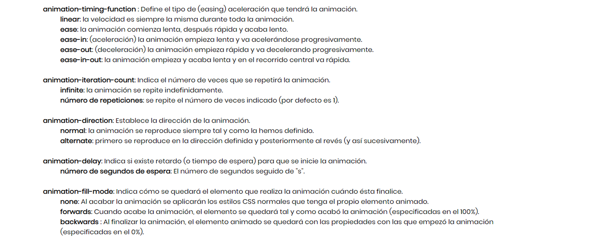

Animaciones
De una manera parecida a las transiciones, pero con una mayor potencialidad, en HTML5 tenemos a nuestra disposición las animaciones (animation).
Para empezar con algo sencillo, primero vamos a hacer paso a paso que el martillo (creado en SVG) -y que ya hemos utilizado en otros temas- gire al colocar el cursor encima. Sitúa el cursor encima del martillo para ver la animación.
Establecemos la animación
Seguidamente, en el código CSS, vamos a incluir dos cosas. Por una parte, en el selector del (div) donde está el martillo, indicamos qué animación tendrá que reproducir, indicando un nombre y la duración de la animación expresada en segundos. El nombre de la animación (animación_martillo) y la duración (2s) son valores obligatorios, pero existen valores opcionales que nos permiten personalizar la animación, como son:
